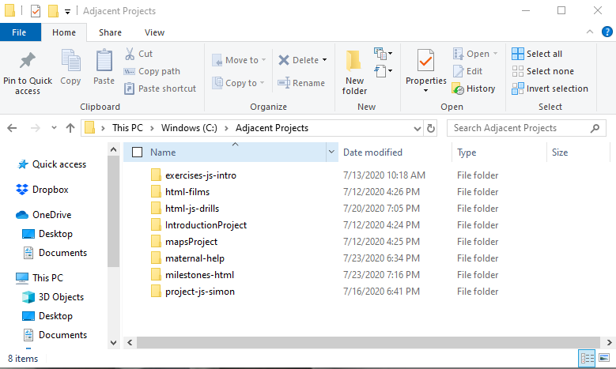
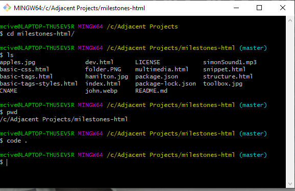

Development Environment
First, let's talk about the Command Line. The command line will help you get to the workspace for your code in VS Code.
Command Line
Go to the folder where you have your project saved. Then right click and click the option of "Git Bash Here".
- Here is an example of the folder I'm using

- Then here is my gitbash to help me make sure I'm in the right project folder to start coding!

Below are some descriptions of what the abreviations mean in my command line:
- cd is used to call up directories.
- ls is used to list the contents of a directory -- it displays the other folders and files.
- pwd means present working directory and is used to see what directory (file) you are currently in.
- code . allows you to open this directory in VS code -- Make sure you have this command downloaded in your VS Code before you try and do this command on the Command Line.